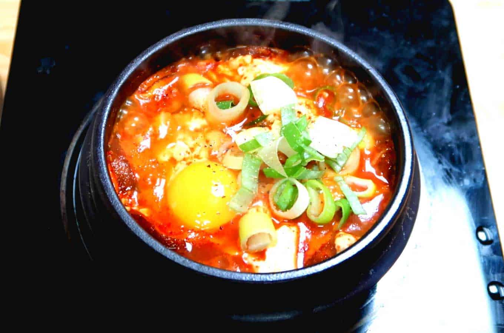

Soondubu - Korean Spicy Soft Tofu Soup

Recipe Description
Soondubu is one of the most popular dishes that is served in
Korean restaurants. The dish is so popular that it has sparked
many restaurant brands to become successful by primarily centering
around the dish. Notable restaurants that serve this dish primarily
are BCD Tofu House and So Gong Dong. Many other Korean restaurants also
serve this dish as well because it is well liked by the customers.
This recipe page will make sure you will come out and make your own
Korean spicy soft tofu soup for you and your family to enjoy! There will need to be
ingredients and steps to follow and you too can enjoy soondubu in the comfort of your home
instead of dining out.
Ingredients
- Anchovies (Gutted, head removed, and dried)
- 5 ounces of radish, washed and sliced thin
- dried kelp aka gim in Korean
- 2 tbsp of Korean hot pepper flakes
- 1 tsp of toasted sesame oil
- half a cup of pork belly and cut into small pieces
- 1 tsp of vegetable oil
- quarter cup of chopped onion
- 2 cloves of minced garlic
- 1 green onion and chopped
- half a cup of kimchi, chopped
- 1 tsp of kosher salt
- half tsp of sugar
- 1 tube of soft tofu
- 1 egg (optional)
Instructions
Making the Anchovy Kelp Stock
- Get the anchovies, radish, kelp, and 4 cups of water into a pot.
Cover and boil at medium high heat for 10 minutes until it boils.
-
Reduce the heat to low after and boil for another 20 minutes.
- Remove from the heat and strain. This will make about 2 cups of stock
Making the Spicy Paste
- Combine the spicy pepper flakes and sesame oil into a small bowl
and mix.
- Now heat up a 3 cup earthenware pot on the stove over medium high
heat for 3 to 4 minutes.
- Add the vegetable oil , onion, garlic, and stir it with a wooden spoon for a minute.
- Add the pork and stir until it is no longer pink.
- Add the kimchi and keep stirring.
- Add a half cup of anchovy stock and cook for 7 minutes over medium heat.
- Add the salt and sugar and mix well.
- Cut the tube of soft tofu and put it in the pot. Break the tofu gently.
- Now put the hot pper mixture on top and mix it.
- If you want to use an egg, now you can use it. Sprinkle in some green onions and you're
ready to serve!